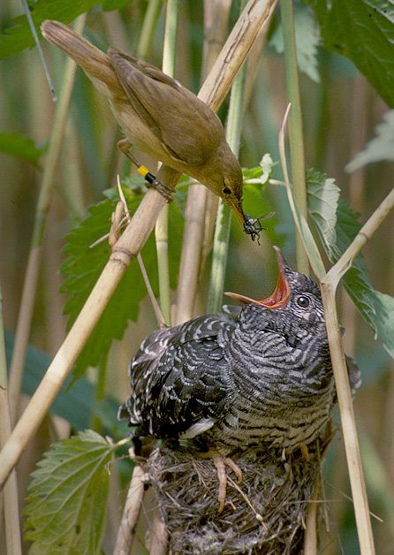
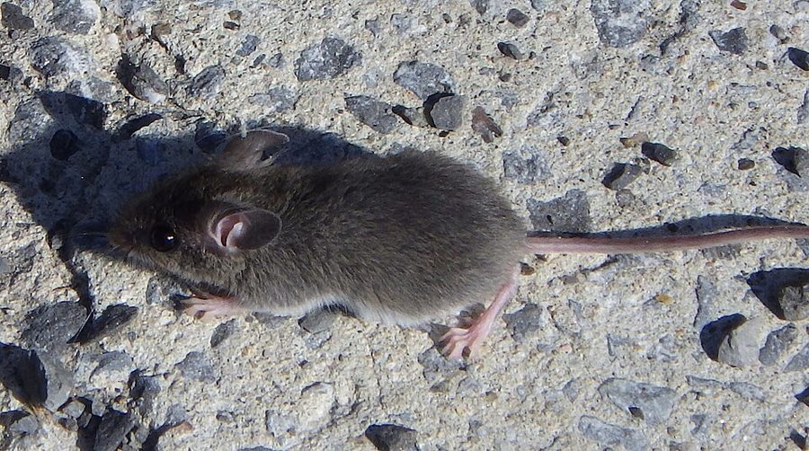
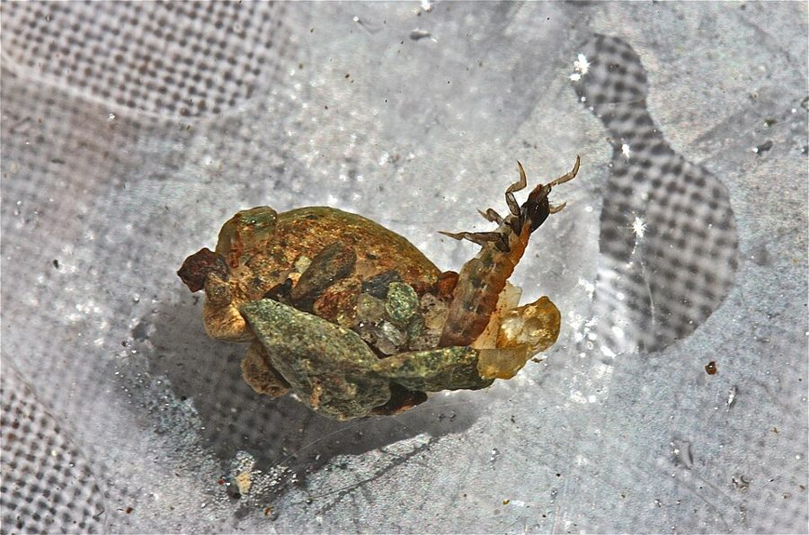
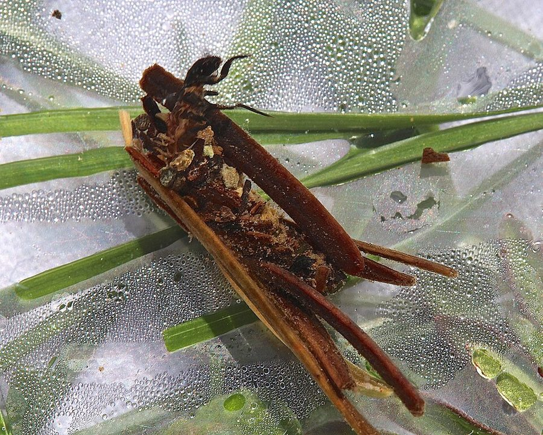
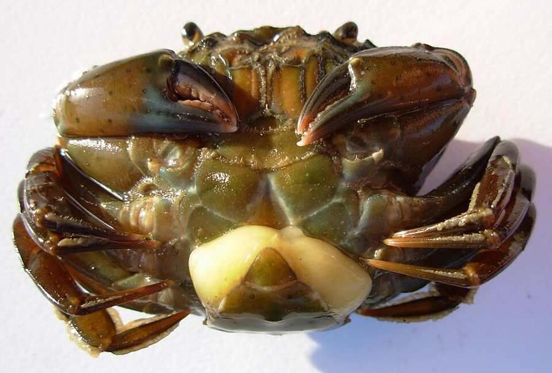
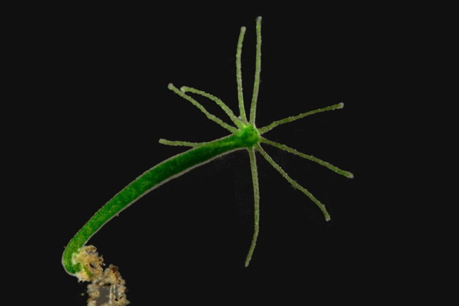
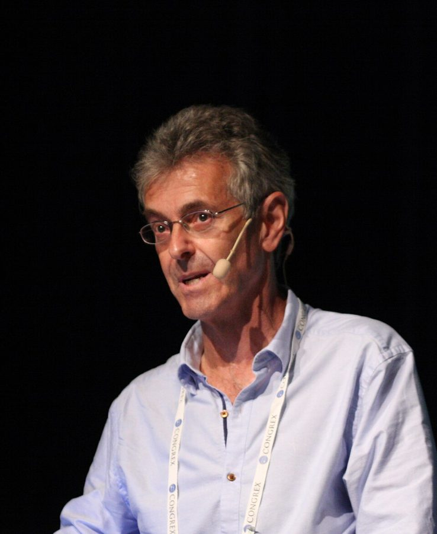

这一页在做什么
第 13 章的前半。这一章是 1989 年第二版新加的，压缩了作者 1982 年的另一本书《延伸的表型》。它从全书的一个张力出发：基因各自为己，身体却像一个目标统一的整体。Dawkins 先把「表型」的定义改宽，再拿一串越走越远的例子去试它：石蚕蛾用石子盖的房子、被吸虫寄生的蜗牛、被杜鹃雏鸟使唤的小鸟。读的时候抓两条线：一个基因的作用要「伸出身体」，得满足什么条件；寄生者和宿主什么时候会合作。

一只芦苇莺在喂巢里的大杜鹃雏鸟。雏鸟比养父母大得多，张着橙红色的大嘴。第 38–43 段讲的就是这样的场面。Per Harald Olsen，CC BY-SA 3.0，维基共享资源 读之前：这一页在全书的哪里
第 12 章用博弈论讲完合作，第 13 章回到全书最根本的问题：选择到底以谁为单位。第 1 段的 immortal coils 是第 3 章的章名，survival machines 是第 2 章起的说法；第 2 段坦白，前面有些章把个体当作替自己算账的主体，有些章从基因出发，两种说法一直并用。第 9 段预告的答案（减数分裂为什么通常公平、个体为什么存在），要到下一页才给出；这一页先绕到身体外面去。
一个基因的作用，能不能算到身体外面的石头、别的动物身上？什么条件下能算？
读的时候带着这几个问题。不用先找答案，读完回来对照「检查一下理解」。
石头的硬度怎么能算石蚕蛾基因的表型？作者要读者先接受的前提是哪一个？§2
吸虫让蜗牛壳变厚，看上去在帮宿主。作者为什么认为不是？他有多大把握？§3
寄生者什么时候会变成合作者？按作者的说法，「我们自己的」基因又为什么合作？§4
养父母明明可以识破杜鹃雏鸟，为什么常常照喂不误？§5
这一页的路线
这一页像三级台阶，中间夹一段岔路。§1 先摆出张力，再用减数分裂驱动说明基因真会为了自己拖累身体；作者没有马上回答「那身体凭什么团结」，而是说先换一件工具：把表型的定义改宽。§2 走第一级：作用落在身体外的无生命物体上，中间有两段他自认的离题感叹。§3 走第二级：作用落在另一个生物身上，末尾提出「寄生者的基因从哪条路出去」。§4 是岔路，读到这里会觉得离开了延伸表型：它在回答寄生者何时合作，并把结论推到我们「自己的」基因和病毒上，这是在给下一页解开开头的张力打基础。§5 走第三级：隔着距离起作用；讲杜鹃时又滑回个体的眼光，第 44 段作者自己把它拉回基因。
台阶越往上，基因的作用伸得越远
§1
身体团结，
基因却各自为己
一、身体外的物体
石蚕蛾的石头
§2
二、别的身体
吸虫、微孢子虫、蟹奴
§3
三、隔着一段距离
海狸的湖、杜鹃
生命与晚餐
§5
岔路：寄生者从哪条路出去
甲虫、水螅、病毒 §4
本站示意图。实线台阶是延伸表型一步步放宽的三级；虚线是 §4 的岔路，它不是台阶的一级，却是下一页回答开头那个问题要用的材料。 作者落在哪： 一个基因的表型应当算到它对世界的一切影响，只要这种影响是它被选择出来的适应：石头、别的生物的身体、远处养父母的行为都可以算。寄生者和宿主合不合作，取决于双方的基因走不走同一条出口；我们「自己的」基因团结，也只是因为这个。
分节地图
这一页是原书第 13 章的第 1–5 节。原书各章没有小标题，粗体的节名是本站起的，下面是这一节第一段开头的几个词，在电子书里搜它就能跳过去。读完打个勾。
基因与身体的张力、作弊的 t 基因约 1800 词 An uneasy tension disturbs the heart … 第 1–3 段立题，第 4 段第一次正式定义表型，第 6–8 段讲作弊的基因。第 9 段预告的答案在下一页，第 11 段引出延伸的表型。 石蚕蛾的石头房子约 1200 词 The phenotypic effects of a gene are … 第 12 段是新定义。第 14–15 段是作者自认的离题。第 17 段承认没人研究过石蚕蛾房子的遗传，论证全靠「它是适应」这一步。 吸虫、微孢子虫与蟹奴约 1400 词 We are ready for the next step … 第 21 段是作者的猜想，他说还没检验。第 25–26 段提出全章的关键问题：寄生者的基因从哪条路出去。第 26 段的 page 182 指第 10 章。 同一条出口：甲虫、水螅、病毒约 1800 词 Look at what can happen when … 甲虫和水螅是「同出口就合作」的两个例子；第 31 段把结论推到我们自己的基因，第 33–35 段转到叛逆的 DNA 和病毒。 海狸的湖与杜鹃的大嘴约 1700 词 The caddis lives inside its house … 第 36 段海狸，第 38–43 段杜鹃，第 42 段提出生命与晚餐的原则。第 44 段作者说又滑回了个体的眼光，第 45 段改用基因重说一遍。
先用中文过一遍：这一页的概念
先把这一页用到、作者默认你懂的几个概念讲一遍。讲的是概念本身，作者拿它推出什么，读原书时自己看。前几章讲过的等位基因 、减数分裂 、「某种行为的基因」 ，点进去看；下一页的复制因子与载体 是这一页的落脚点。
§1 表型 phenotype 丹麦遗传学家 Johannsen 二十世纪初区分了基因型和表型：基因型是生物带着的遗传信息，表型是看得见、量得出的性状，身高、眼睛颜色、行为都算。容易忽略的一点是，说「某个基因的表型」时，比的是差别：同一个位置上换一个等位基因，身体会差在哪里。这像说「改了这一行配置，程序的输出哪里变了」，而不是说这一行配置单独产生了整个输出。表型也不全由基因定，同样的基因型在不同的环境里会长成不同的样子。
在这一页： 第 4 段给出教科书式的定义，第 12 段把它放宽。第 17–18 段带引号的「genes for」，用的正是「相对于等位基因的差别」这一层意思。
§1 减数分裂驱动 meiotic drive; segregation distorter 孟德尔的分离定律说：杂合体产生的配子里，两个等位基因各占一半，像掷一枚公平的硬币。有些基因能让这枚硬币偏向自己，比如让不带自己的精子失去受精能力，或者在卵子形成时抢到被留下的那个位置。这样的基因叫分离变相因子（今天通行叫分离畸变因子），它造成的偏向叫减数分裂驱动。它不必让身体活得更好就能在种群里扩散，常常还拖累身体。果蝇、小鼠、玉米、真菌里都找到过。2006 年的导言里，作者借用别人起的名字，把这类基因叫作 ultra-selfish genes（超级自私的基因）。
在这一页： 第 6–9 段。它是开头那个张力的证据：基因确实会为了自己背叛身体里的其余基因。为什么这种事不常见，下一页回答。
§1 延伸的表型 extended phenotype Dawkins 1982 年同名书提出的说法。表型通常只算到身体为止；他主张，一个基因的表型应当算到它对世界的一切影响，只要这个影响在它被选择的过程中起了作用。条件有两个：这种影响是一项适应，而且背后有遗传差异可供选择。所以鸟巢、蛛网可以算；动物走路踩出的脚印一般不算，因为没有哪个基因是靠留脚印被选择的（这是本站的例子）。程序员的类比：一个函数的「效果」不只是返回值，还包括它写进外部文件、改了别的进程状态的副作用；延伸表型就是把这类副作用也记到函数头上，前提是这个函数正是因为这些副作用才被留在代码库里。
出了石蚕蛾的身体
石蚕蛾的基因
蛋白质
神经系统
挑石头
石头的硬度
出了吸虫的身体
吸虫的基因
化学信号
蜗牛的分泌细胞
蜗牛壳的厚度
隔着一段距离
杜鹃的基因
雏鸟的嘴和叫声
养父母的神经
养父母喂食
本站示意图，三条链分别对应 §2、§3、§5。白底的方框还在基因所在的那个身体里，有底色的已经越过了身体的边界。作者的论点是：每条链从头到尾都是间接的，在哪一环越过边界，并不改变「这是基因的效果」。 在这一页： 第 11 段点名，第 12 段给出定义，第 18 段第一次用到石头上，第 22、24、36、45 段一步步推远。「延伸表型的中心法则」在下一页第 50 段。
§5 生命与晚餐的原则 life/dinner principle Dawkins 和 John Krebs 1979 年讨论物种之间的军备竞赛 时提出的。名字取自伊索寓言：猎狗追野兔没追上，被人嘲笑，猎狗说野兔是在逃命，自己只是在追一顿饭（书里写成兔子和狐狸）。意思是：两方在同一场竞赛里，输的代价不一样，输了就没命的一方受到的选择压力更大，往往跑在前面。它不是说吃亏的一方笨，而是说为了一次都不吃亏要付的代价，可能比偶尔吃亏还贵。打个比方：小偷失手一次可能就进监狱，住户偶尔被偷只是损失点钱，所以小偷研究门锁往往比住户更用心。
在这一页： 第 42 段提出，第 43 段用它回答第 41 段的问题：养父母的神经系统为什么没演化出对杜鹃的抵抗力。
书里的人和研究
按在书里出现的顺序排，标题前是节号。只讲到读懂这一页需要的程度。
§1 小鼠的 t 基因和 James Crow
家鼠，摄于加拿大渥太华。t 基因的研究对象就是这种老鼠，照片和书无直接关系。Ahunt，公有领域（CC0），维基共享资源 t 在小鼠第 17 号染色体上，今天叫 t 单倍型：它是好几段倒位连在一起的一大块，不发生交换，整块遗传。第 7 段的数字是：带一份 t 的雄鼠，精子里多达 95% 带 t；两份 t 的老鼠早夭或不育。它的作弊只在雄性身上起作用，靠的是让不带 t 的精子失去活力。作者引的 genes that beat the system 是 Crow 的说法，Crow 1979 年在《科学美国人》上写过一篇讲这类「违反孟德尔定律的基因」的文章。
James F. Crow 1916–2012 美国群体遗传学家，长年在威斯康星大学，和木村资生合写过群体遗传学的经典教科书。在这一页里只出场一句话，给作弊的基因起了个外号。
§2 石蚕蛾的房子
一种用小石子做壳的石蚕蛾幼虫（马鞍形壳的一类）。Bob Henricks，CC BY-SA 2.0，维基共享资源 石蚕蛾是毛翅目昆虫，成虫像不起眼的褐色小蛾子，幼虫生活在溪流和湖底。很多种的幼虫吐丝把沙粒、小石子、树枝或叶片粘成管状的壳，背着走，长大了再往开口处加材料；用什么材料、做成什么形状，因种而异。作者在第 17 段承认，当时没人研究过石蚕蛾房子的遗传，因为它们很难人工繁殖。第 15 段的 Jane Goodall（1934–2025，英国灵长类学家，1960 年起在坦桑尼亚贡贝观察野生黑猩猩）出现在一个假设句里：黑猩猩并不盖石屋。

另一种石蚕蛾的幼虫，壳是用植物碎片粘的，摄于美国华盛顿州。第 13 段说有的种用树枝，有的用枯叶，有的用小螺壳。Bob Henricks，CC BY-SA 2.0，维基共享资源 §3 吸虫、微孢子虫和蟹奴
一只雌性普通滨蟹的腹下鼓出一个淡黄色的囊，那是寄生的蟹奴露在外面的部分，其余部分像根系一样伸在蟹体里。Auguste Le Roux，CC BY-SA 4.0，维基共享资源 吸虫是扁形动物里的一大类寄生虫，一生常要换好几个宿主，蜗牛往往只是其中一站，所以第 25 段说它们离开蜗牛的路「复杂得让人分心」。被吸虫寄生的蜗牛壳变厚，书里没给出处，第 21 段的解释是作者的猜想。微孢子虫（Nosema ）当时算原生动物，今天归入和真菌亲近的一类。蟹奴是藤壶的远亲，成体只剩伸进蟹体的「根」和露在蟹腹下的一个囊；被寄生的蟹不再繁殖，还会像照料自己的卵那样照料这个囊。
§4 食菌小蠹和绿水螅
绿水螅（Hydra viridissima ）。它的绿色来自住在细胞里的单细胞绿藻。Frank Fox，CC BY-SA 3.0 de，维基共享资源 ambrosia beetle 通称食菌小蠹：它们在树干里钻坑道，在坑道壁上种真菌当饭吃，ambrosia（神仙的食物）指的就是这种真菌，和豚草无关。书里的 Xyleborus ferrugineus 卵里带着细菌，作者说细菌帮未受精卵发育成雄虫。水螅是淡水里的小型刺胞动物，书里的 Chlorohydra viridissima 今天通常写作 Hydra viridissima 。它和另外两种水螅的对照，是本章「同一条出口就合作」最干净的一组例子：绿水螅的藻随卵传给下一代，是帮手；另两种的藻不随卵传，是病害。
§4 质粒、类病毒和会跳的 DNA质粒是细菌里独立于染色体、自己复制的小段 DNA，多是环状，有的能嵌进染色体再切出来，细菌之间的抗药性常靠它传。质粒大小差得很远，小的几千个碱基，大的上百万，并不总比病毒小。类病毒是另一回事：它是寄生在植物细胞里的一小段环状 RNA，1971 年由 Diener 报告；书里把它和质粒并提，是笼统的说法。DNA 能在染色体上跳进跳出，McClintock 1940 年代研究玉米时就看到了，她因此获 1983 年诺贝尔奖；分子层面的证据大多在 1970 年代以后陆续出现。第 32 段说它是第一版之后「颇为激动人心」的发现之一，第 33 段关于皮屑、亲吻的设想是作者的想象。
§5 海狸的坝
美国康涅狄格州班塔姆河上的一道河狸坝，坝后的水面被抬高。Versageek，CC BY-SA 4.0，维基共享资源
海狸（beaver，今天通行叫河狸）用树枝、泥和石头在溪流上筑坝，水位抬高后形成池塘，再在塘里用树枝堆出入口在水下的巢。第 36 段作者说坝的达尔文主义用途「并不完全清楚」，他列的几种用途（保护巢穴、方便运木头），头一种就带着 probably。书里说海狸湖能延伸几百码。这一段里的 Canathan 是排印错，应是 Canadian。
§5 杜鹃雏鸟和它的养父母大杜鹃把蛋下在别种小鸟的巢里，雏鸟孵出后把巢里原有的蛋和雏鸟推出去，独占养父母（巢寄生的概念见巢寄生 ）。第 38 段说的不同 races 的雌杜鹃，各自专门寄生某一种宿主，蛋也像那种宿主的蛋，今天叫「宿主族」。书里提到的岩鹨（dunnock）、苇莺、草地鹨、知更鸟都是英国常见的宿主。第 40 段鸟类学家「并不少见」的那一幕，是别家的成鸟顺路往杜鹃雏鸟嘴里塞食物。早期把养父母比作「上瘾者」的德国鸟类学家，书里没有点名。
§5 John Krebs 和「军备竞赛」
John Krebs 2012 年在瑞典隆德的行为生态学大会上作报告。Yerpo，CC BY-SA 3.0，维基共享资源 第 42 段的「我的同事 John Krebs」：他和 Dawkins 1979 年在《英国皇家学会会刊 B》发表《物种之间和物种之内的军备竞赛》，生命与晚餐的原则就出自这篇文章。第 4 章注 20 说的两篇主张「动物信号多半是操纵」的文章，也是他们俩合写的；作者在那条注里说，这条思路在《延伸的表型》里推到了尽头，第 13 章是那本书的节选。
John Krebs 1945– 英国动物学家，研究鸟类的行为生态学，曾在牛津和 Dawkins 共事。后来任英国食品标准局首任主席，2007 年起为上议院终身议员。
词与短语
按节排，每节前面是分节地图里的节名。标着「每个字都认识」的，是熟词生义、习语和反话，最容易读错。灰色的那几个字是原句里的位置，在电子书里搜它就能找到。
§1 基因与身体的张力、作弊的 t 基因
skipping like chamois
… DNA replicators, skipping like chamois, free …
像岩羚羊一样蹦跳
chamois 是阿尔卑斯山的岩羚羊，在山岩间跳来跳去。作者的比喻：基因自由自在地一代代往下跳，身体只是临时的落脚处。
immortal coils shuffling off
… immortal coils shuffling off an endless succession …
不朽的螺旋一次次蜕下（会死的身体）
双关。《哈姆雷特》里有 shuffled off this mortal coil（摆脱这尘世的纷扰，coil 常被后人读成「肉身」）。第 3 章的章名 Immortal coils 反用这句，coil 又可指 DNA 的螺旋；这里说不朽的基因一次次甩掉会死的身体。
the great genetic diaspora
… leg of the great genetic diaspora.
基因的大离散
diaspora 原指犹太人流散世界各地。比喻基因每一代搭着精子卵子四散到不同的身体里；next leg 是「下一程」。
a pretty impressive agent
… behaves like a pretty impressive agent …
相当了不起的行动主体
pretty 是「相当」，agent 在这里是「有自己目标、自己行动的主体」，不是「代理人」。译本这里用的词和下一页的术语撞了，见译本勘误。
in its own right
… impressive agent in its own right.
凭它自身（就算得上）
不靠别的东西撑腰，本身就是。这句说身体自己看起来就像一个主体，不像一群基因的临时联盟。
as if calculations
We imagined individual animals making complicated economic …
「好像在算账」的计算
原文的 as if 带引号：动物并不真算，只是行为看起来像算过一样。全书反复用这个限定（见第 5 章的样板页）。译本这里把 as if 丢了，见译本勘误。
pride and joy
… is my pride and joy.
最得意、最心爱的东西
固定搭配，常用来说孩子或心爱之物。作者说《延伸的表型》是他职业生涯最得意的成就。
I’d almost rather you stopped reading now
I’d almost rather you stopped reading now
我简直宁愿你现在就别读了
would rather 后面接过去式，表示「我宁愿你……」。半开玩笑：读这一章，不如直接去读《延伸的表型》。
On any sensible view of the matter
On any sensible view of the matter
不管怎么合理地看
sensible 是「明智、合乎常理的」，不是「敏感」。作者先主动让一步：自然选择并不直接作用于基因，它只「看得见」基因的效果。
in comparison with its alleles
… in comparison with its alleles, has …
和它的等位基因相比
表型定义里最要紧的半句：一个基因的作用，是和换成别的等位基因时相比的差别。见上面的概念块。
make itself felt
… doesn’t normally make itself felt.
显露出来，让人察觉
字面「让自己被感觉到」。这句说：因为大家只讨论对整个身体有好处的基因，理论的矛盾平时就显不出来。译本把因果读反了，见译本勘误。
a flight of fancy
This is not a flight of fancy.
异想天开
fancy 是「幻想」，flight 是「飞翔」。作者说：基因只顾自己、不顾身体，并不是空想，真有其事。
genes that beat the system
genes that beat the system
钻了规则空子的基因
beat the system 是「钻制度的空子、赢过规则」。这里的 system 是减数分裂那套公平抽签的规则。这是 Crow 起的外号，作者引用。
drops out
… the answer drops out once we …
自然而然地得出
drop out 平时是「退出、辍学」，这里是「（答案）自己掉出来」。作者说：懂了个体为什么存在，减数分裂为什么公平也就明白了。答案在下一页。
pull together
… its parts do pull together in …
齐心协力
字面「一起拉」，像划船、拔河时一齐使劲。第 27 段又用来说甲虫和细菌的基因。
club together
… ancient replicators club together to make, …
凑到一起、合伙
club 作动词，是「凑钱、合伙办一件事」，和俱乐部、棍棒都无关。第 23 段说上百万微孢子虫 club together 生产激素，也是这个意思。
lumbering robots
… make, and reside in, lumbering robots, …
笨重的机器人
回指第 2 章结尾的说法，指身体：基因住在里面、遥控着它们。
second nature
… it is second nature for them …
习惯成自然
第二天性，熟练到不假思索。生物学家习惯了从个体出发提问，连问题都看不见了。
turned crashingly on its head
… the truth turned crashingly on its head.
被整个颠倒过来
turn on its head 是「彻底颠倒」，crashingly 加重语气。说「DNA 是生物复制自己的工具」，是把真相倒过来了。译本这里读错了，见译本勘误。
begging the question
… we shall be begging the question.
预先假定了要证明的结论
逻辑学术语，不是「提出问题」。如果先默认个体理所当然存在，再去解释个体为什么存在，就成了循环论证。
§2 石蚕蛾的石头房子
as a matter of fact
… as a matter of fact, turn out …
作为一个事实（而不是定义）
平时是「其实」。这里作者特意和「定义」对照：就算基因的作用碰巧只落在身体里，那也只是事实如此，不该写进定义。
spring to mind
… Examples that spring to mind are …
一下子想到的
spring 是「跳」，跳进脑子里。
anything but
… caddis larvae are anything but nondescript.
绝不是
anything but 是「什么都是，就不是……」，意思正好和字面的「任何东西」相反。成虫不起眼，幼虫绝不平庸。
a mobile home
… The house is a mobile home, …
活动房屋
mobile home 是可以拖着走的活动房屋、房车。作者的玩笑：石蚕蛾背着房子走。
claim no credit
… inside our mothers, claim no credit, …
不居功
claim credit 是「把功劳算到自己头上」。我们的眼睛是在娘胎里自己长出来的，没人觉得那是自己的功劳；作者猜，这就是我们对长出来的东西不惊叹、对盖出来的房子却惊叹的原因。
cannot resist going a little further
… I cannot resist going a little further.
忍不住再多说几句
cannot resist 是「忍不住」。作者自己承认第 14、15 段是离题。
think of the furore if
… And think of the furore if …
想想看要是……会引起多大轰动
furore 是「轰动、一片哗然」。这是假设句：要是 Goodall 带回黑猩猩盖石屋的照片……。黑猩猩并没有盖房子，译本把它读成了真事，见译本勘误。
genes for
… The geneticist should recognize genes …
「造成……差别的」基因
原文的 for 带引号，是作者特意的：意思是「造成房子形状差别的基因」，不是说有一个专管盖房子的基因。说法的来历见
「某种行为的基因」 。
Admittedly
Admittedly, nobody has actually studied the
得承认
作者主动交代证据的缺口：石蚕蛾房子的遗传当时没人研究过。他接着说，只要房子是适应，就足以推出有相关的基因。
for that matter
… or, for that matter, upon the …
其实也一样
插入语，意思是「就这一点来说，……也是如此」。基因对神经系统的影响是间接的，对眼睛颜色、豌豆皱皮的影响其实也一样间接。
§3 吸虫、微孢子虫与蟹奴
we can safely bet that
… And we can safely bet that …
可以放心地断定
字面「可以放心地打赌」。作者把握很大：吸虫不会那么慷慨，自己掏钱给蜗牛加厚壳。
What is in it for
What is in it for the fluke?
对……有什么好处
what's in it for me 是常用口语：「我能得到什么」。这一问引出作者的猜想。
stand to gain
… fluke genes stand to gain from …
有望得益
stand to 加动词，是「有可能（得到或失去）」，和「站」无关。全章常用，第 25 段起换成说「从哪条路出去」。
My conjecture is the following
My conjecture is the following.
我的猜想如下
作者明说下面是猜想，段末又说它可以检验，但还没检验过。读这一节的结论时，记得这一层。
in a position to
We are now in a position to
现在可以（做某事）了
字面「处在一个位置上」，意思是「有条件、有能力」。
uneasiness is misplaced
… such uneasiness is misplaced.
这种不安是多余的
misplaced 字面「放错了地方」，引申为「用得不是地方、没有根据」。
a cornucopia
… but a cornucopia for Nosema parasites.
聚宝盆
希腊神话里的丰饶之角，装满吃不完的果实。长不大的巨型幼虫，对寄生虫是吃不完的粮仓。
the Peter Pan beetles
Freudian anxiety than the Peter Pan
「彼得·潘甲虫」
两个典故。彼得·潘是永远长不大的男孩，指第 23 段那些长不成成虫的巨型幼虫；Freudian anxiety 指弗洛伊德说的阉割焦虑，因为下面要讲「寄生去势」。
a case history
… here is a case history to …
一个病例
case history 是医学上的「病历、病例」，不是「历史案件」。
probably no accident
It is probably no accident that
恐怕不是巧合
作者的限定：蟹奴先攻生殖腺、后攻维生器官，他认为「恐怕」是寄生者的适应，没有说已经证明。
rich pickings
rich pickings for the parasite at
一大笔油水
pickings 是「捡来的好处、外快」。被去势的蟹把养分都留在自己身上，正好便宜了寄生者。
page 182
… as I suggested on page 182, …
纸书第 182 页
Kindle 上看不到这个页码。它指第 10 章「种真菌、养蚜虫、线粒体」一节里讲线粒体和病毒的那一段（
10b ）。第 32、35 段的 page 182 也指那一段，只是各自引的猜想不同。
relics of ancient parasitic mergers
… all relics of ancient parasitic mergers.
古代寄生者合并留下的遗迹
作者的比喻：我们的细胞可能是许多古老寄生者和宿主融合而成的。前面有一个 Maybe，这是推测。
§4 同一条出口：甲虫、水螅、病毒
share a common exit
… host genes do share a common exit.
走同一条出口
这一节的关键词。exit 指基因离开现在这个身体、进入下一代的路，对宿主的基因来说就是精子或卵子。第 31 段换成 outlet，意思一样。
putting it mildly
… is putting it mildly.
说得太轻了
英式的轻描淡写反过来用：说它们「合作」都算客气了，实际上亲密得多。
prick … into action
… prick the unfertilized eggs into action, …
一戳就把（卵）激活
prick 是「扎、刺」，into action 是「使行动起来」。细菌刺激未受精卵开始发育成雄虫。
Algy as in Algernon
… taken to saying Algy as in Algernon, …
把 algae 念成 Algernon 的 Algy
作者的英式较真：algae（藻类）的 g 该念硬音，有些美国生物学家念成软音，像人名 Algernon 的昵称 Algy。他说复数这样念「勉强可以原谅」，单数不行。和论证无关的一段括号。
not least in America
… some biologists, not least in America, …
尤其是在美国
not least 是「尤其、特别是」，不是「至少不」。
in any department of life
… in any department of life, will …
生活的任何方面
department 在这里是「方面、领域」，不是「部门」。
proper channels
… broken out of the sperm/egg …
正规渠道
原文带引号，是公文腔的「按正规渠道办事」。作者故意用官腔，把精子卵子说成基因出行的「官方通道」，叛逆的基因则走旁门。
at the drop of a hat
… chromosomes at the drop of a hat, …
说来就来、随时
字面「帽子一落地（就开始）」，意思是毫不迟疑、随时都行。
a bit wild
… which seemed a bit wild at …
有点离谱
wild 在这里是「荒唐、不着边际」，不是「野生」。作者说第 10 章那个猜想当年看着有点离谱，后来的质粒证据支持了它。
hitch a ride
… could hitch a ride in any …
搭便车
原指在路边招手搭车。叛逆的 DNA 可以搭着脱落的皮屑、口腔细胞去到别人身上，这是作者的设想。
all too predictable
all too predictable to a selfish
太容易预料了
all too 是「太……了」，带一点无奈或讽刺。对自私基因理论的人来说，病毒那些花招一点也不意外。
Not content with
Not content with simply being breathed
不满足于
病毒不满足于随呼吸飘出去，还让我们使劲打喷嚏、咳嗽。作者说在某些情况下这「看来更可能」是病毒的设计，不是一律如此。
it would be worth looking into
… it would be worth looking into.
值得查一查
作者的限定：他不知道性病会提高患者性欲的直接证据，只说这是个值得研究的猜想。
erect any distinction
If we want to erect any distinction,
立起一道区分
erect 是「竖立、建立」。作者说：真要分类，该按走正道还是走旁路来分，不是按「自己的」还是外来的。
down to
… down to being a loyal, doting …
一直细到
down to 是「（从大到小）一直到」，强调范围之细：连当个忠心、溺爱孩子的父母都包括在内。
§5 海狸的湖与杜鹃的大嘴
A long reach indeed
A long reach indeed!
伸得可真远
呼应章名 The long reach of the gene。reach 是「手臂够得着的距离」。
any fool should be able to see
any fool should be able to see
傻子都看得出
反话铺垫：作者先替读者说出「宿主真蠢」，下一段再推翻它。
out of the corner of its eye
… out of the corner of its eye, …
用眼角余光
不是正眼看，而是不经意间瞥见。
finds less favour with
… this kind of language finds less favour …
不太受……待见
find favour with 是「受到……青睐」。作者承认：现代的一些实验者不喜欢「上瘾」这种说法。注意原文是 some，不是全部。
It is only fair to add
It is only fair to add that
公平起见得补一句
only fair 是「这样才公道」。作者在给自己的说法加反方意见。
get away with it
… cuckoos to get away with it.
（做了坏事）还逍遥无事
get away with 是「做了坏事不受惩罚、得逞」，不是「带着它逃走」。
I can’t help feeling
But I can’t help feeling that
我总觉得
作者的限定：「宿主还没来得及演化出抵抗」有一些证据，他觉得不止于此，接着提出生命与晚餐的原则。这是他的倾向，不是证明。
more to it than that
must be more to it than that.
没那么简单
there's more to it than that 是「事情不止这些」。
overhead costs
… which would have overhead costs.
固定开销
会计用语，指房租、水电这类不论干多少活都要付的成本。更大的眼睛、更大的脑子，平时养着也要花钱。
slipped back into
… we have once again slipped back into …
不知不觉又滑回了
slip 是「滑、不小心」。作者在自我纠正：上面讲生命与晚餐，又是从个体出发算账了，下一段改用基因的说法。
a loaded assumption
… body was a loaded assumption.
暗含立场的假设
loaded 是「（话里）有预设、带倾向的」，如 loaded question（诱导性问题）。「自己的身体」这个说法本身就预设了一个基因属于一个身体。
译本勘误
对着中译本（40 周年增订版）读的时候看这一节。下面是译本这几节里会让人读错的地方：灰字是英文原文那一处的几个词，在英文电子书里搜它；方框里是译本的原句，在译本电子书里搜它。措辞别扭但意思没错的不收。全书的勘误汇总在译本勘误 。
§1 agent 不是「载体」术语 … behaves like a pretty impressive agent …
译本：「作为载体，它的工作已臻极致」
agent 是行动的主体：身体看上去像一个有统一目标、自己行动的主体。第 2 段的 agent 译本也译成「载体」。可「载体」是下一页第 52 段 vehicle 的译名，正好是作者要和 agent 区分的另一个概念，读译本的人会以为这里已经在讲载体。
§1 丢了「好像」漏译 We imagined individual animals making complicated economic
译本：「我们想象个体动物进行着复杂的思考」
原文是动物在做复杂的、带引号的 as if 经济计算：只是表现得像算过账。译本丢了 as if，还加了「思考」，像是说作者认为动物真会盘算。这个限定是全书反复强调的。
§1 因果读反了误译 This is partly why the paradox
译本：「部分原因是这个理论核心的矛盾」
原文：达尔文主义者习惯讨论对整个身体有利或有害的基因，不考虑对基因自身的好处；正因为这样，理论核心的矛盾平时显不出来。译本反过来说成：他们不考虑基因自身的利害，是因为这个矛盾。
§1 扩散的是种群，不是精子误译 … it will spread inexorably through the population …
译本：「分离变相因子广泛取代其等位基因以进入精子」
原文说：分离变相因子一旦由突变产生，就会以等位基因为代价，在种群里无可阻挡地扩散，这就叫减数分裂驱动。译本把「在种群里扩散」写成了一次减数分裂里的事。
§1 是不育，不是死胎误译 … either dies young or is sterile, …
译本：「幼年夭折，或者胎死腹中」
原文：带两份 t 的老鼠要么早死，要么不育。同一段后面也说这些个体 die or are sterile。
§1 「有一些证据」和「局部种群」误译 … some evidence that wild populations of mice …
译本：「曾使野鼠彻底灭绝」
原文：有一些证据表明，过去一些野生鼠种群因 t 的流行而灭绝。说的是局部的种群，前面一句也是 the whole local population，而且只是 some evidence。译本说成「已有证据」「野鼠彻底灭绝」，像是整个物种没了。
§1 新突变通常要好处大于坏处才扩散译反 … bad effects are outweighed by its good …
译本：「一些新变异只会在优不敌劣时才会传播」
原文：几乎所有遗传上的副作用都是坏的，新突变通常只有在坏处被好处抵过时才会扩散。译本成了「优不敌劣时才传播」，正好相反。
§1 「把真相整个颠倒了」误译 … It is the truth turned crashingly …
译本：「认识非凡的真相」
原文：把 DNA 看成生物复制自己的工具，是一个深刻的错误，是把真相整个颠倒了。译本的「认识非凡的真相」丢了「整个颠倒」这层意思，这一段后面「生物学家把真相弄颠倒了」的呼应也就看不出来了。
§2 「只是事实」不是「部分事实」误译 … just as a matter of fact.
译本：「但这只是部分事实，不是我们的定义」
原文：就算基因的作用碰巧只落在它所在的那一串身体里，那也只是事实如此，不该写进定义。译本的「部分事实」读着像说这个说法只对了一半。
§2 用石头盖的，不是盖在石头上误译 … the ones built in local stone.
译本：「最神奇的要数那些建于石头上的房子」
原文：最让人佩服的是用当地石子盖的房子。全节讲的「石头的硬度」就是这些建材的硬度。
§2 丢了「不居功」，理由就没了漏译 … inside our mothers, claim no credit, …
译本：「眼睛与肘关节都是在娘胎中发育而成的」
原文：也许因为眼睛、肘关节的长法和我们自己的一样，是在娘胎里长出来的，我们对这种过程不居功，所以才不讲道理地更佩服房子。译本丢了「不居功」和「也许」，后面的「所以」就接不上了。
§2 Goodall 的照片是假设误译 … think of the furore if Jane Goodall …
译本：「珍妮·古道尔从贡贝河带回的那些轰动照片」
原文是假设：要是 Goodall 从贡贝带回黑猩猩盖石屋的照片，会引起多大轰动。黑猩猩并不盖房子，作者是拿它和石蚕蛾对比。
§2 adaptation 是「适应」，不是「适者生存」术语 … house is a Darwinian adaptation.
译本：「来自达尔文主义的适者生存」
adaptation 是「适应」：被自然选择塑造出来、对生存繁殖有用的性状。全章的论证都靠「这是一项适应」这个前提，译本在这一页把它译成「适者生存」，第 17 段两处、第 24 段一处，意思就模糊了。
§3 壳也可能太厚误译 … a shell to be too thick …
译本：「蜗牛壳是可厚可薄」
原文：壳可能太薄（这容易想到），也可能太厚。太厚就占用了本可以生孩子的资源。这是吸虫猜想的前提。
§3 是「对手吸虫」，不是「天敌」误译 … any of its fluke rivals.
译本：「但吸虫的天敌们也许可以」
原文：一只吸虫不指望自己的基因会进到这只蜗牛的后代里；就算有吸虫的基因进去，也可能是它任何一个对手的。所以吸虫的基因不在乎蜗牛繁殖。
§3 对吸虫有利、对蜗牛有害译反 … an influence that benefits themselves but …
译本：「这种影响对双方都有益」
原文：吸虫的基因施加的影响，对它们自己有利，却让蜗牛的基因付出代价。整段要说明的就是两边利益不一致。
§3 「可以检验，但还没检验」误译 … This theory is testable, though it …
译本：「尽管实验结果可以轻易确定这个猜想」
原文只说这个理论可以检验，但还没人检验过。译本加了「可以轻易确定」，把一个未检验的猜想说得像十拿九稳。
§3 是吸虫的适应，不是吸虫适应了壳译反 … snail shell is a fluke adaptation.
译本：「我们需要接受的只是吸虫适应了蜗牛壳的变化」
原文：我们只需接受，蜗牛壳的变化是吸虫的一项适应。这正是延伸表型的前提：变化是由吸虫的基因经自然选择造出来的。译本把主次颠倒了。
§3 蟹奴长的是「根」误译 … drives an elaborate root system deep …
译本：「细密的足部系统」
原文：蟹奴看上去像一种寄生植物，把复杂的根系扎进蟹的组织里。译本把「像寄生植物」译成了「像寄居生物」，「根系」译成了「足部系统」。
§3 丢了 Maybe漏译 … Maybe, as I suggested on page …
译本：「我们的细胞已经走过这种演化过程」
原文开头是 Maybe：也许我们的细胞已经沿着这条演化谱系走了很远。译本丢了「也许」，推测成了定论。
§4 ambrosia beetle 是食菌小蠹术语 … a common exit. Wood-boring ambrosia beetles …
译本：「擅长钻木的豚草甲虫」
ambrosia beetle 通称食菌小蠹，在树干里钻洞、种真菌吃，和豚草无关。另外译本把第 26、27 段并成了一段，对照段落时留意。
§4 是单倍二倍体，不是单倍体术语 … These beetles happen to be haplodiploid, …
译本：「都是单倍体生物」
haplodiploid 是单倍二倍体：雌性有两套染色体，雄性只有一套。只说「单倍体」，后面「受精卵变雌、未受精卵变雄」就说不通了。机制见单倍二倍性 。
§4 比的是病毒，不是细菌误译 … plasmid is even smaller than a virus …
译本：「质粒比细菌还要小」
原文：质粒比病毒还小。质粒本来就住在细菌里，说它比细菌小没有意义。（书里这句本身也有出入，见「书里的人和研究」。）
§4 讨论的是出逃的片段译反 … talk about a breakaway fragment in order …
译本：「我会多讨论一点入侵片段」
breakaway 是从我们自己的染色体上出逃的片段，和「入侵」的方向正相反。下一段讲的正是一段人类自己的叛逆 DNA。
§4 「在正道之外，或代替正道」误译 … alongside, or instead of, the orthodox …
译本：「或者非常规的精子/卵子途径」
原文：如果基因找到一条通往别人身体的旁路（和正统的精卵通道并行，或者干脆取而代之）。译本把正统的精卵通道说成了「非常规」的。
§4 病毒可能是出逃的基因误译 Viruses may well, indeed, have originated as
译本：「由一些入侵基因的集合演化而成」
原文：病毒很可能起源于一批出逃的基因（breakaway genes）。同一段后面 breakaway human chromosomal gene 译本又译成「外来人类染色体基因」。方向弄反了：作者说的是从我们身上跑出去，不是从外面进来。
§4 该分的是走正道和走旁路，不是基因和病毒误译 If we want to erect any distinction,
译本：「而病毒另辟蹊径」
原文：要区分，就区分走精子卵子正道、在身体之间传递的基因，和走旁路的基因；两类里都可能有原本是自己的，也可能有原本是外来的。译本又写回了「基因对病毒」，正是作者要拆掉的二分。
§5 loaded assumption 是「暗含立场」误译 … body was a loaded assumption.
译本：「只是加重语气的假设」
loaded 是「预设了立场的」。原文：「自己的身体」这个说法本身就是一个带预设的假设，它默认了基因归某个身体所有。
§5 只是「再间接一点」误译 … Only a little more indirect is …
译本：「只有一部分间接影响是这些布谷鸟基因」
原文：同一批杜鹃基因对宿主行为的影响，只比它们对雏鸟嘴的颜色、形状的影响再间接一点点。这是本节的关键一步：既然后者算表型，前者也该算。
值得停下来的句子
the phenotypic effects of a gene need to be thought of as all the effects that it has on the world.— §2 第 12 段。本站译：一个基因的表型效应，应当被看作它对世界的一切影响。
这是全章的定义句，口气是认真下判断，不是比喻。关键词是 all 和 world：表型不再止于皮肤。常被读漏的是紧跟着的两句和后面的条件：作用碰巧只在身体里，那是事实，不是定义；而且只有当这些影响是被选择出来的适应时，才算它的表型（第 17、22 段）。漏了这个条件，就会以为基因「决定」了世界上的一切。
Our own genes cooperate with one another, not because they are our own but because they share the same outlet … into the future.— §4 第 31 段。本站译：我们自己的基因彼此合作，不是因为它们是「我们的」，而是因为它们共用同一个通往未来的出口（省略处原文是：精子或卵子）。
这一页最有挑衅性的一句，把「自己的基因」这个说法拆掉了。原书 are 是斜体，强调「属于谁」不是理由。它也给下一页埋了伏笔：既然团结只是因为出口相同，那么个体作为一个整体能存在，就要看它是不是给所有基因提供了一条公平的出口。
读完：作者到底说了什么
读完这一页的几节再看。下面是作者在这几节里的论点，由本站按论点重新组织，不按原书的顺序；每条下面是依据所在的段落，拿不准就回书里那几段再读一遍。
基因的表型应算到它对世界的一切影响，前提是那是一项适应 作者认为「表型止于身体」只是碰巧的事实，不该写进定义。基因直接管得着的只是造出哪种蛋白质，对眼睛颜色、神经系统的影响本来就隔着一长串环节，石蚕蛾房子的石头只是再远一环。前提是房子是达尔文式的适应：是适应，就必须有遗传差异可供选择。他承认没人研究过石蚕蛾房子的遗传。
§1 第 4 段，§2 第 12、16–18 段 一个生物的基因可以在另一个生物身上表达 被吸虫寄生的蜗牛壳变厚、甲虫幼虫长成巨型、蟹被去势：如果这些变化是寄生者的适应，就是寄生者基因的延伸表型。蜗牛一例他明说是猜想，可以检验，但还没检验：吸虫的基因不指望进入这只蜗牛的后代，所以乐于让蜗牛用少生换长寿。
§3 第 19–24 段 寄生者合不合作，看它和宿主的基因是否走同一条出口 作者提议，这是关于任何寄生者最该问的问题。如果寄生者的基因也搭宿主的卵子去下一代，双方「想要」的未来就几乎一样，他预期寄生者会变成合作者，甚至并入宿主；不走同一条路的，他预期会伤害宿主。他举的例子是食菌小蠹的细菌和三种水螅的对照。
§3 第 25–26 段，§4 第 27–30 段 我们「自己的」基因合作，也只因为共用一条出口 他把上一条推到底：基因合作不是因为它们「属于」同一个身体。哪个基因找到了不经精卵的旁路，就会少合作。要分类，该分走正道和走旁路的基因，而不是自己的和外来的；病毒很可能就是出逃的基因（他在第 10 章提过这个猜测）。
§4 第 31–35 段 基因能隔着距离起作用；宿主不反抗，可能是因为反抗太贵 海狸的湖、杜鹃雏鸟使唤养父母，都是延伸表型。作者认为雏鸟不只是在骗宿主，它的大嘴「看来」像毒品一样作用于宿主的神经系统。为什么没演化出抵抗？「还没来得及」有一些证据，但他觉得不止于此：杜鹃雏鸟失手就死，宿主失手只是少养一窝，抵抗的开销可能比偶尔被利用更大。
§5 第 36–45 段
合起来： 这一页拆掉的是「身体」这道墙：基因的作用不止于身体，「自己的」基因也只是同一条出口上的合伙人。开头的问题于是换了一个问法：既然没有墙，身体为什么还这么团结？答案留给下一页：复制因子和载体，以及生命周期的瓶颈。
对照今天
这本书 1976 年出版，这一章写于 1989 年。下面挑出这一页里能被后来的研究检验的说法，分「书里 / 当时 / 今天」三栏，并给一个结论。结论判的是标题里「书里的说法：」后面那一句。全书的这一节汇总在对照今天 。
成立 后来的研究支持这句话。部分成立 大方向对，细节或适用范围要改。被改写 后来的研究推翻了它，或者换了一种说法。有争议 学界至今没有定论，两边各有代表性的研究。书里的说法：分离变相因子一出现就会在种群里无可阻挡地扩散，t 基因会让局部的野鼠种群灭绝
书里 带一份 t 的雄鼠精子里多达 95% 带 t，t 一出现就会像野火一样扩散，局部种群很可能灭绝；作者说有一些证据表明过去发生过（§1 第 6–8 段）。
当时 t 是研究得最多的驱动基因。野外的 t 频率比按它的驱动强度算出来的低，这个落差早就有人注意到。
今天 减数分裂驱动在动植物和真菌里找到了大量例子，「不顾身体也能扩散」这一点成立。但野外的 t 一直维持在不高的频率。Manser、König 和 Lindholm 对一个野生家鼠种群跟踪了四年多，发现近一半的窝有不止一个父亲，带 t 的雄鼠在精子竞争中吃亏，t 的频率反而下降。人造的驱动倒做到了作者说的事：2018 年一种 CRISPR 基因驱动在笼养的冈比亚按蚊里 7–11 代就传遍，种群崩溃。野鼠种群因 t 灭绝的直接记录，本站没有查到。核对于 2026-10。依据：Manser, König & Lindholm, Nature Communications 11 (2020)；Kyrou 等, Nature Biotechnology 36 (2018)。
书里的说法：杜鹃雏鸟的红色大嘴是一种像毒品的超常刺激，养父母的神经系统被它控制
书里 作者认为杜鹃雏鸟不只是骗过宿主，它的大嘴像毒品一样作用于宿主的神经系统；他也承认现代的一些实验者不喜欢这种说法（§5 第 39–40 段）。
当时 「超常刺激」是经典动物行为学的概念：比正常信号更夸张、更能引起反应的刺激。杜鹃的红嘴是常被举的例子，当时直接检验它的实验还很少。
今天 Davies 和同事在英国做的实验没有支持「红嘴」这一半：把知更鸟、岩鹨、苇莺自家雏鸟的嘴染红，亲鸟并不多喂（Noble 等 1999）。苇莺肯喂饱一只杜鹃雏鸟，主要靠它又快又急的乞食叫声，听起来像一整窝雏鸟；它张嘴的面积反而不如一窝苇莺（Kilner 等 1999）。「利用养父母的感官」成立，主要的渠道换成了声音。核对于 2026-10。依据：Kilner, Noble & Davies, Nature 397 (1999)；Noble, Davies, Hartley & McRae, Behaviour 136 (1999)。
另一边 嘴的颜色并没有被完全排除：Tanaka 等 2011 年在《行为生态学》上指出，早先的实验没有按鸟的视觉去衡量颜色。第 41 段的问题也有了新答案：澳大利亚的华丽细尾鹩莺会抛弃单独一只的杜鹃雏鸟（Langmore 等, Nature 2003），宿主拒雏是可能的，只是少见。
书里的说法：寄生者的基因如果和宿主的基因走同一条出口，寄生者就会变成合作者
书里 作者说这是关于寄生者最重要的问题，用 I suggest、I would expect 提出预测，举食菌小蠹的细菌和水螅的藻作例子（§3 第 26 段，§4 第 27–30 段）。
当时 研究病原体毒力的人在 1980 年代也提出过类似的预测：只能从亲代传给子代的寄生者应当变得温和，能在个体之间传播的可以更凶。
今天 有实验支持：Sachs 和 Wilcox 在实验室里让倒立水母体内的共生藻只能由亲代传给后代，或者只能在个体之间传播；后一组的藻繁殖得更快、更多地离开宿主，宿主长得慢、生得少。但「同一条出口」要严格相同才行：只随卵、不随精子传的共生菌（如沃尔巴克氏体）和宿主雄性的利益不一致，常常杀死宿主的雄性后代，或者把雄性变成雌性。核对于 2026-10。依据：Sachs & Wilcox, Proceedings of the Royal Society B 273 (2006)；Werren 等, Nature Reviews Microbiology 6 (2008) 关于沃尔巴克氏体的综述。
本站怎么看
读完作者的论点，再看它站不站得住。每一块摆出三样：主流怎么看，作者怎么看，本站的评论。最后一句是本站对这一页的总体判断。
把表型画到身体外面，是新发现，还是换一种记账方法
主流看法： 延伸表型被广泛当作一个好用的视角，研究寄生者操纵宿主、动物的建筑（巢、坝、蛛网）时常被引用。争论在边界：Odling-Smee、Laland 和 Feldman 2003 年的《生态位构建》认为，生物改造环境、环境再反过来改变选择，这个反馈本身就是演化的一个原因，不该只记在某个基因的账上。Dawkins 2004 年撰文回应，题目就叫「延伸的表型，但别太延伸」。
作者的看法： 基因的效果本来就隔着一长串环节，石头只是再远一环；条件是这东西是适应（第 12、17–18、22 段）。
本站的评论： 论证在逻辑上很干净：接受「眼睛颜色的基因」这种说法，就得接受「石头硬度的基因」。它没有带来新事实，带来的是一种记账方法，好处是逼你问「这东西对谁的基因有利」。「必须是适应」这个条件守得住边界，人类的城市、互联网大多不能直接算成某些基因的延伸表型。代价是，证明「是适应」常常就是最难的那一步，石蚕蛾的房子作者自己也没有遗传数据。
宿主身上的变化，都是寄生者的杰作吗
主流看法： 寄生者操纵宿主今天是一个很活跃的领域。但 Poulin 1995 年的综述提醒：宿主被寄生后的变化，可能是寄生者的适应，也可能是宿主自己的应对，或者只是生病的副作用，要分开检验。蜗牛被吸虫寄生后长得特别大，就有人提出那是宿主的适应（Ballabeni 1995）。
作者的看法： 他先排除「吸虫在帮蜗牛」，再提出吸虫在用蜗牛的繁殖换它的长寿；他明说这是猜想、还没检验，第 22、24 段的结论都挂着「如果这是寄生者的适应」。
本站的评论： 推理的顺序很好：先问对谁有利，再问谁付成本。作者的限定也守得很严，每一步都挂着「如果」。读的时候要记住，这一节的例子是在演示概念，不是已经证明这些变化就是寄生者的适应；后来的研究正是在这个「如果」上花了几十年，答案因例子而异。
「自己的」基因，只是同一条出口上的合伙人吗
主流看法： 今天研究「基因组内冲突」的人基本接受这个看法：转座子、减数分裂驱动基因、只随母亲传的线粒体基因，都可能和其余的基因利益相左；Burt 和 Trivers 2006 年的《冲突中的基因》汇总了大量例子。人类基因组里将近一半的序列来自转座元件（人类基因组计划 2001 年的初稿）。
作者的看法： 基因合作只因为共用出口；要分类，该按走正道还是走旁路分（第 31、35 段）。
本站的评论： 这是这一页最有远见的一段，1989 年「自私 DNA」还是新说法，今天已是教科书内容。要补的是：这些叛逆序列大多没有找到旁路，它们是在生殖细胞里多复制自己，搭的仍是精卵这条正道；基因组也演化出了专门压制它们的机制（比如生殖细胞里的 piRNA 系统）。所以出口是关键，却不是唯一的变量，同一条出口里也有作弊和反作弊。
本站的总体看法： 这一页最值得带走的是两件工具：问「这东西对谁的基因有利」，问「它们走不走同一条出口」。前者让表型越过身体，后者解释了合作和冲突，都经得住后来的研究。要打折扣的是具体的例子：蜗牛壳是没检验的猜想，杜鹃「红嘴」这一半没有得到后来实验的支持，t 基因让野鼠灭绝也缺少记录。
检查一下理解
先在心里答，再点开。答错的那题，回书里把对应那一节再读一遍。
1.（§1）分离变相因子对身体通常有害，为什么还会在种群里扩散？ 因为它在减数分裂这一关作弊：进入配子的机会远超一半（t 基因在雄鼠精子里多达 95%）。只要作弊带来的好处够大，即使拖累身体，它的拷贝数仍会一代代增加。
2.（§1）「某个基因的表型是绿眼睛」，严格地说是什么意思？ 是说这个基因和它的等位基因相比，经过发育，在身体上造成了眼睛颜色的差别。表型是相对于等位基因的差别，不是说这一个基因单独造出了眼睛。
3.（§2）没人研究过石蚕蛾房子的遗传，作者凭什么说存在影响石头硬度的基因？ 凭「房子是一项达尔文式的适应」这个前提：自然选择要造出适应，必须有可供挑选的遗传差异。所以至少曾经有影响房子差别的基因。前提站不住，结论也就站不住。
4.（§3）为什么吸虫的基因「乐于」让蜗牛活得久、生得少，蜗牛的基因却不乐意？ 吸虫的基因要靠蜗牛活着，却不指望进到蜗牛的后代里，蜗牛生多生少与它无关。蜗牛的基因的未来全靠蜗牛繁殖，少生就是亏本。两边离开蜗牛的出口不同，利益就分了岔。
5.（§4）绿水螅和另外两种水螅，差别在哪？作者用它说明什么？ 绿水螅里的藻随水螅的卵传给下一代，对水螅有益；另两种水螅的藻不随卵传，是让水螅生病的寄生者。作者用它说明：寄生者和宿主走同一条出口时，就会走向合作。
6.（§4）按作者的分法，感冒病毒的基因和哪一类基因是「一伙」的？ 和同样想让宿主打喷嚏的、从人类染色体上出逃的基因一伙。作者认为分类该看走哪条出口：走旁路的病毒基因和出逃基因一伙，随卵传的病毒和正统的染色体基因一伙，不看来源是自己的还是外来的。
7.（§5）宿主明明可以抵抗杜鹃，为什么常常不抵抗？作者给了哪两种解释？ 一是还没来得及：杜鹃可能最近几个世纪才开始寄生现在的宿主，他说这有一些证据。二是他更倾向的生命与晚餐的原则：杜鹃雏鸟失手就死，宿主失手只是少养一窝，为了抵抗要付的开销可能比偶尔被利用还贵。
用一句话说这一页，写给一个没读过的人。
想一想：你的工作里，有没有两方在同一个项目里、却「从不同的出口离开」的情形，比如外包团队和甲方、短期合同工和老员工？在哪些决定上，他们会像吸虫和蜗牛一样想要不同的「壳厚」？
精彩回顾
读过又忘了，从这里想起来。挑的是这一页最值得记住的模型、动物和说法，不按原书顺序；每条后面是节号，想细看就回书里那一节。全书各页的这一节都收在全书回顾 。
一句话： 一个基因的表型，是它为了被复制而对世界造成的一切影响；寄生者和宿主合不合作，看它们的基因走不走同一条出口。
石头也是表型 石蚕蛾幼虫挑石子盖房子。只要房子是适应，石头的硬度就和眼睛颜色一样，是它基因的表型，只是隔得更远一环。
§2 同一条出口 绿水螅的藻随卵传，是帮手；另两种水螅的藻不随卵传，是病害。作者说，我们自己的基因合作，也只是因为都走精子或卵子这条路。
§4 作弊的 t 基因 带一份 t 的雄鼠，精子里多达 95% 带 t；两份 t 的老鼠早死或不育。这类基因不顾身体也能扩散，叫分离变相因子。
§1 变厚的蜗牛壳 吸虫不指望进到蜗牛的后代里，于是让蜗牛用少生换长寿。这是作者的猜想，他自己说还没人检验。
§3 生命与晚餐 兔子跑得比狐狸快，因为兔子在逃命，狐狸只是在追晚饭。杜鹃雏鸟失手就死，养父母失手只是少养一窝。
§5